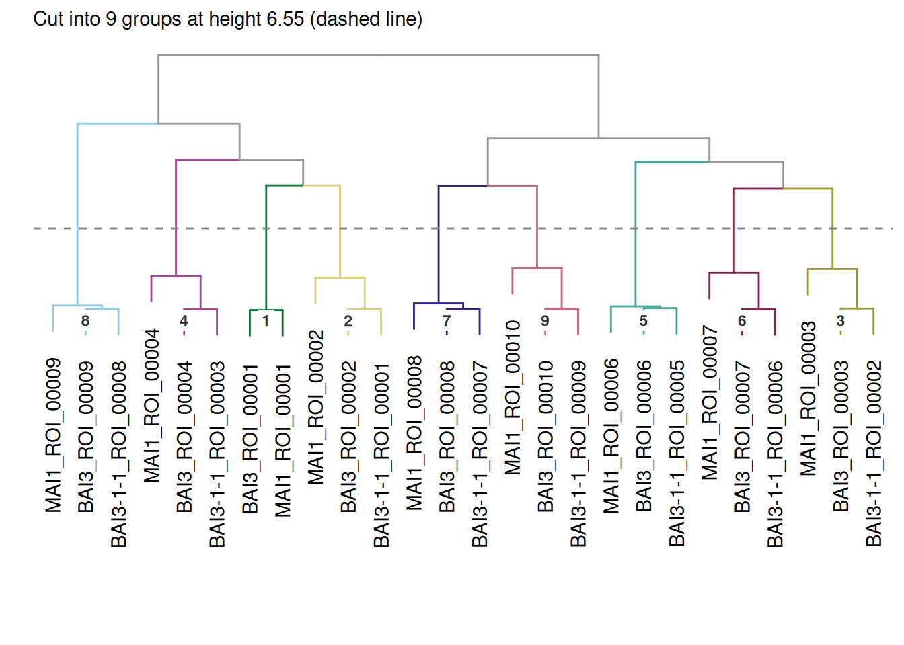

tantale
Transcription activator-like effector (TALE) genes, found in plant-pathogenic Xanthomonas bacteria, encode proteins built around a central array of near-identical ~34-residue repeats. Two residues in each repeat, its RVD, specify a single base of the DNA sequence the whole array binds, so an array’s repeat sequence is effectively a readable code for its target site. That modularity makes TALEs a favourite tool for genome engineering, and a recurring subject of study in plant pathology, where the targets themselves are frequently a plant susceptibility gene the pathogen exploits.
tantale is an R package for finding, comparing, aligning and predicting the targets of TALE genes in genomic sequence. It wraps several purpose-built external tools (AnnoTALE, Talvez, PrediTALE) and reimplements others in R (DisTAL and functal) behind a single, consistent set of R objects, so that a whole study (discovery, correction, classification, alignment, target prediction) can be scripted and reproduced without switching tools or file formats along the way.
A typical study, in one figure
Grouping arrays into related TALEs answers the question the package is built around: “which TALEs, across genomes, are versions of the same thing?”

Three related genomes, clustered by relatedness: nine groups, eight of them with exactly one member per strain, the pattern a set of TALE alleles related by descent is expected to produce. See Classifying TALE sequences from genomes for how this is built, from raw genomic FASTA to this tree.
Getting started
Getting started with tantale is a two-minute tour using data already bundled with the package, with no external tools to install first. From there, Learn tantale walks through the full pipeline on real genomes (discovery and frameshift correction, classification into groups, multiple alignment, and target prediction), with deep dives into the two central object classes, tales/tales_msa, and a case study on naturally truncated TALEs.
See the README for installation instructions, including the conda environment tantale builds for itself to drive its external tools.
Use of large language models
The authors used large language models (Claude, Anthropic – including Claude Sonnet 5) to assist with code development, debugging, and documentation writing throughout this package. Where LLM assistance extends to a manuscript describing this work, it is limited to the copy-editing stage; the manuscript itself is written entirely by the authors. Any figures are prepared by the authors, with LLMs used only to help write the scripts that generate them. The authors affirm that they are fully responsible for the content of the codebase, its documentation, and any accompanying manuscript.